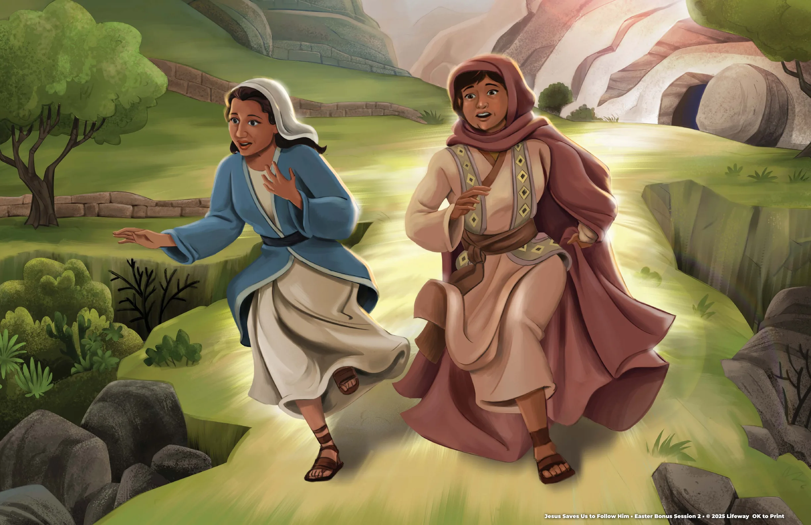

1
What happened after Jesus was buried?
Jesus rose again, and the tomb was empty.
The best news is not only that Jesus died. He rose again.

The Gospel Project: Kids · Easter Bonus Session 2
Jesus was arrested and crucified, even though He had done nothing wrong.
Source references: Matthew 27; Mark 15; Luke 23; John 19
Even while people were crucifying Him, Jesus asked His Father to forgive them.
Luke 23:34 · Jesus' prayer from the cross
Jesus was buried, and a large stone covered the entrance to the tomb.
Source references: Matthew 27:57–66; Mark 15:42–47; Luke 23:50–56
On the third day, Jesus rose from the dead. The stone had been moved.
Matthew 28:1–10 · Jesus rose again
Jesus died on the cross and rose again to save people who repent and believe.
Story point: Jesus died on the cross and rose again to defeat sin and death.
Jesus is the Messiah, the Son of God, who came to earth to save us.
Big-picture answer and Christ connection from the Easter Bonus Session 2 resources
John 3:16 points us to the heart of the gospel: God gave His Son so believers can have eternal life.
Read the full passage from your Bible in the group's approved translation.
Tap a question to reveal a short answer cue.
Questions are adapted from the Younger Kids and Older Kids discussion prompts.